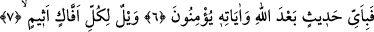
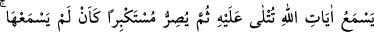
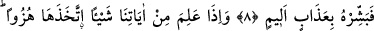
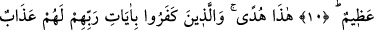
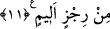

VAY HER YALANCI VE GÜNAHKÂRIN HALİNE!
Bismillâhirrahmânirrahîm
1. Hâ. Mîm.
2. Kitap, azîz ve hakîm olan Allah tarafından indirilmiştir.
3. Şüphesiz göklerde ve yerde inananlar için birçok âyetler vardır.
4. Sizin yaratılışınızda ve (Allah’ın) yeryüzünde yaydığı canlılarda, kesin olarak
inanan bir toplum için ibret verici işâretler vardır.
5. Gecenin ve gündüzün değişmesinde, Allah’ın gökten indirmiş olduğu rızıkta
(yağmurda) ve ölümünden sonra yeri onunla diriltmesinde, rüzgârları değişik
yönlerden estirmesinde, aklını kullanan toplum için dersler vardır.
6. İşte sana gerçek olarak okuduğumuz bunlar, Allah’ın âyetleridir. Artık
Allah’tan ve O’nun âyetlerinden sonra hangi söze inanacaklar?
7. Vay haline, her yalancı ve günahkâr kişinin!
8. O, Allah’ın kendisine okunan âyetlerini işitir de sonra büyüklük taslayarak
sanki hiç onları duymamış gibi (küfründe) direnir. İşte onu acı bir azap ile müjdele!
9. (O) âyetlerimizden bir şey öğrendiği zaman onlarla alay eder. Onlar için